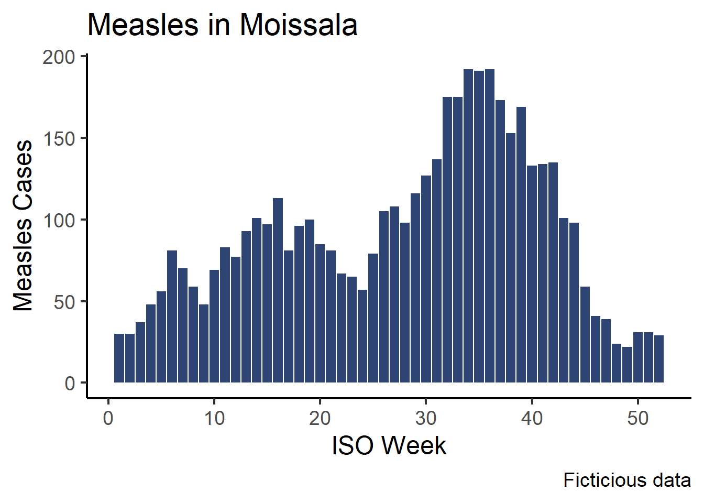
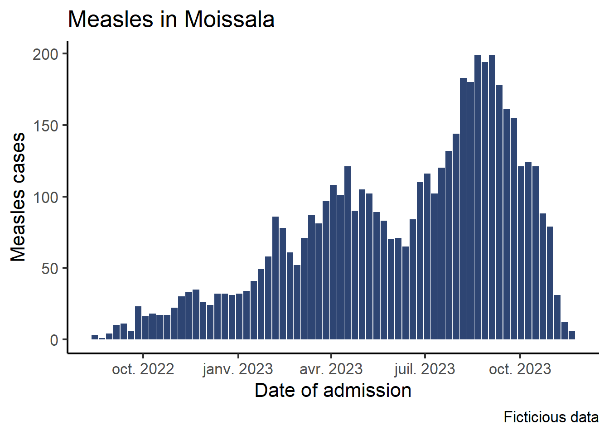
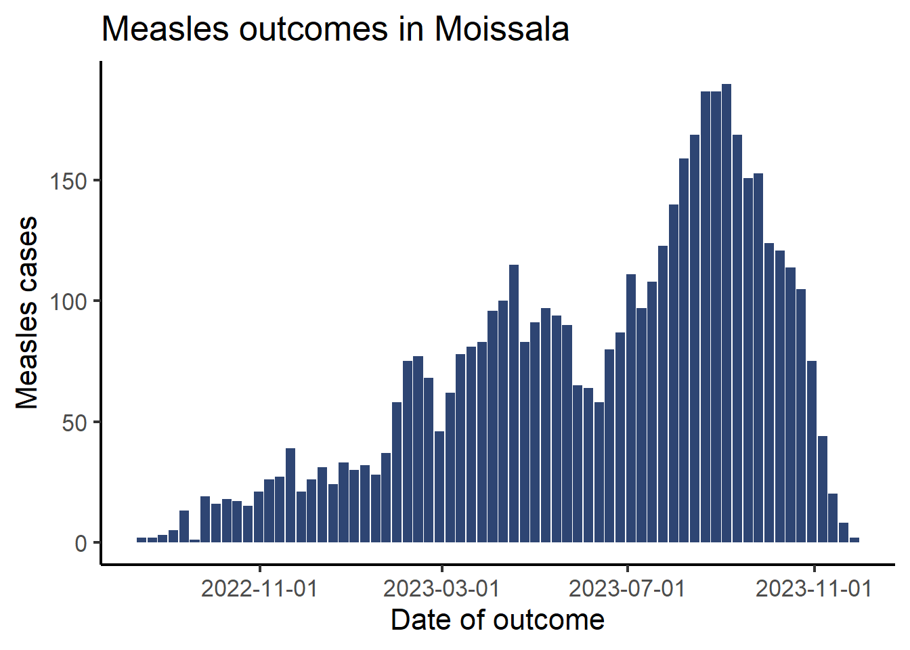
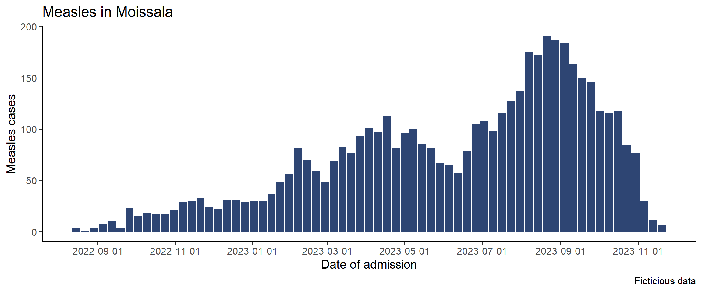
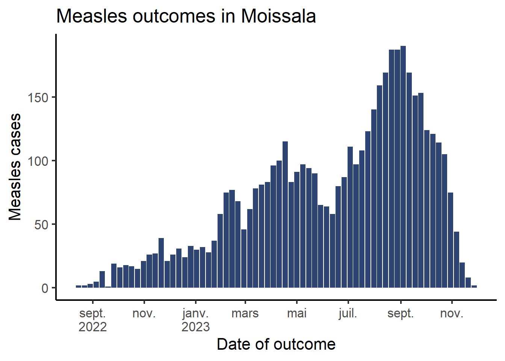
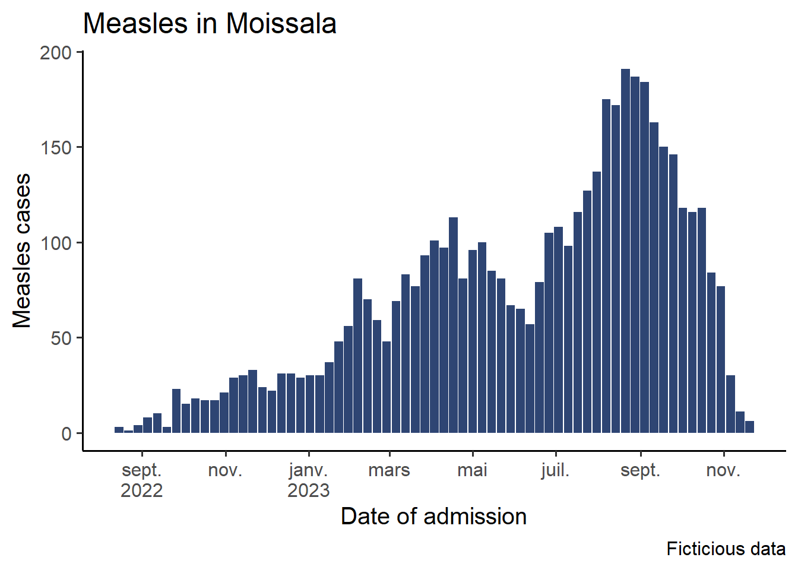
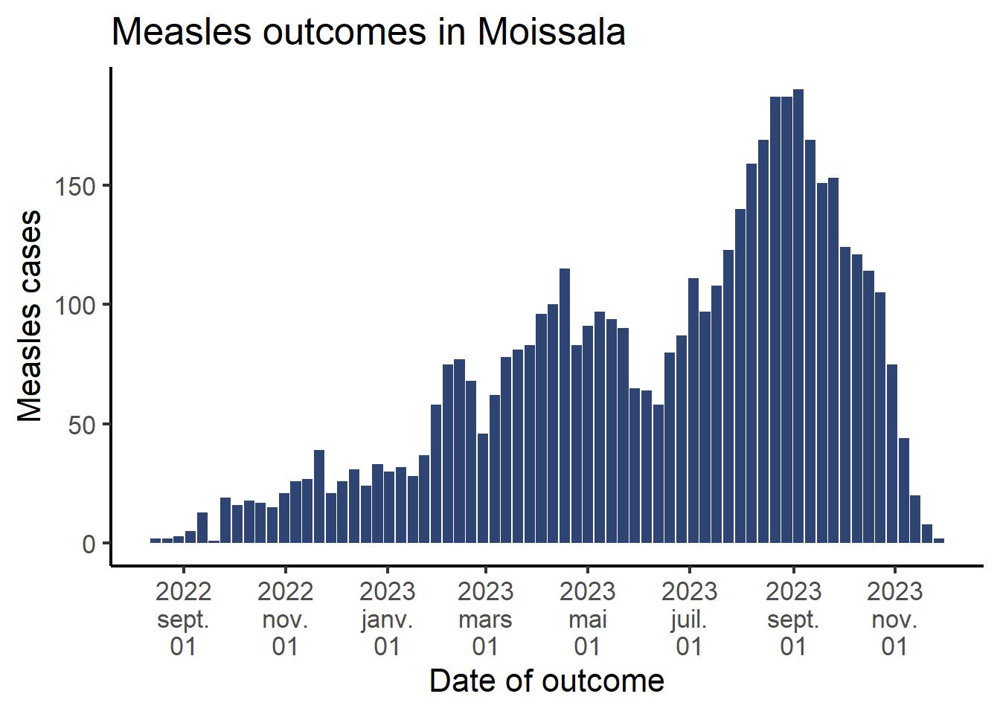
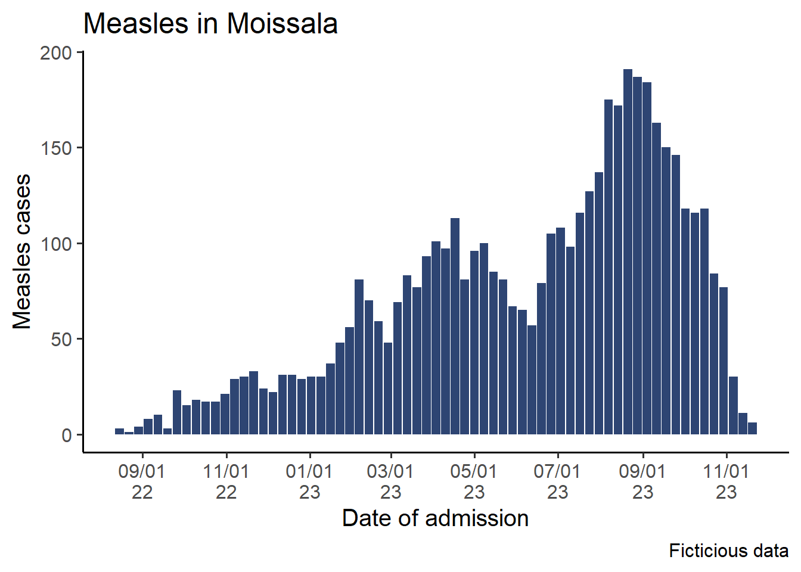

Epicurves with dates in x axis
Satellite
Graphs
ggplot2
epicurve
dates
scales
Display dates rather than epiweeks numbers on your epicurves
Objective
Learn to display dates on the x-axis of your graphs, and how to tweak the date labels.
In the introduction to ggplot session you learned how to plot an epicurve of the number of cases across time.
In that graph we chose to represent epiweeks in the bottom axis, as it is a common task. In this session we will show how to code a variant of this graph with dates instead.
As in the core session, the examples will plot the epicurve for outcomes, and you will code the epicurve for hospitalizations.
Dependancies
We will use the following packages in this session:
Setup
We use the same setup as the one from the ggplot core session.
Warning
To avoid the warnings all along the session, we removed the missing values both in the admission date and outcome date columns. When you analyse and plot data, always be aware of how many missing data you have and how a tidyr::drop_na() command affects your dataframe.
Create the time variable
In the core session we used the function isoweek() from the lubridate package to derive the week ISO number. In this session, we need to aggregate data by week, and yet still retain information on dates. To do that we will use the function floor_date(), which also belong to the lubridate package. This function returns the first date of a given period (day, month, year etc.). You can think of it as a sort of rounding to the smallest value, but for dates.1
1 Predictably, there also is a ceiling_date() function that rounds dates to the highest value of a period
The function has a unit = argument that allows you to choose the period of interest (week, month…) and a week_start = period where you can pass the first day of the week (mondays are 1).
df_linelist <- df_linelist %>%
mutate(
# Week number (ISO)
week_outcome = isoweek(date_outcome),
# First DATE of the week
week_first_day_outcome = floor_date(date_outcome,
unit = "week",
week_start = 1)
)Let’s look at all these time variables:
df_linelist %>%
select(id, date_outcome, week_outcome, week_first_day_outcome) %>%
arrange(date_outcome) %>% # Sort the data by date
head(n = 10) id date_outcome week_outcome week_first_day_outcome
1 3 2022-08-19 33 2022-08-15
2 1 2022-08-21 33 2022-08-15
3 2 2022-08-22 34 2022-08-22
4 6 2022-08-25 34 2022-08-22
5 11 2022-09-04 35 2022-08-29
6 12 2022-09-04 35 2022-08-29
7 7 2022-09-04 35 2022-08-29
8 10 2022-09-05 36 2022-09-05
9 15 2022-09-06 36 2022-09-05
10 19 2022-09-09 36 2022-09-05It is even easier to understand if we calculate the day of thee week associated with each date with the function wday() that also belong to the lubridate package:2
2 The lubridate package is an extremely useful tool to manage dates in R…
df_linelist %>%
mutate(
day_outcome = wday(date_outcome,
label = TRUE,
abbr = FALSE),
day_floor = wday(week_first_day_outcome,
label = TRUE,
abbr = FALSE)) %>%
arrange(date_outcome) %>% # Sort the data by date
select(date_outcome,
day_outcome,
week_outcome,
week_first_day_outcome,
day_floor) %>%
head(n = 10) date_outcome day_outcome week_outcome week_first_day_outcome day_floor
1 2022-08-19 vendredi 33 2022-08-15 lundi
2 2022-08-21 dimanche 33 2022-08-15 lundi
3 2022-08-22 lundi 34 2022-08-22 lundi
4 2022-08-25 jeudi 34 2022-08-22 lundi
5 2022-09-04 dimanche 35 2022-08-29 lundi
6 2022-09-04 dimanche 35 2022-08-29 lundi
7 2022-09-04 dimanche 35 2022-08-29 lundi
8 2022-09-05 lundi 36 2022-09-05 lundi
9 2022-09-06 mardi 36 2022-09-05 lundi
10 2022-09-09 vendredi 36 2022-09-05 lundiThis illustrate how week_outcome and week_first_day_outcome are two ways to have only one value by week, which makes aggregation possible at the week scale.
Tip
Go read the help page for floor_date() to check out the list of possible units.
Aggregate by week
Here are the first ten lines of what it should look like:
week_first_day_adm n
1 2022-08-15 3
2 2022-08-22 1
3 2022-08-29 4
4 2022-09-05 8
5 2022-09-12 10
6 2022-09-19 3
7 2022-09-26 23
8 2022-10-03 15
9 2022-10-10 18
10 2022-10-17 17Draw the epicurve
It should look like that:

Note
Notice that the bars are identical to the epicurve with weeks number. This is normal, are we are aggregating by week in both cases. It is only the information use to represent the week (ISO number or start date) that changes.
Improve the axis appearance (breaksand labels)
ggplot2 automatically provided labels for the x axis, trying to adjust for the range of data. We can manually force it to make the labels more or less frequent, and we can manually change the format of the labels.
To modify the appearance of the axis, we once again use function from the scale_ familly: scale_x_date().
Change breaks
The breaks controls the frequency of ticks on the axis.
The scale_x_date() function has a date_breaks = argument that accepts the interval between two labels in a string. The string can have the following format: "1 week", "2 weeks", "4 months", "2 years" etc.
# Outcome graph
df_linelist %>%
count(week_first_day_outcome) %>%
ggplot(aes(x = week_first_day_outcome,
y = n)) +
geom_col(fill = "#2E4573") +
labs(x = "Date of outcome",
y = "Measles cases",
title = "Measles outcomes in Moissala") +
scale_x_date(date_breaks = "4 months") + # Define breaks
theme_classic(base_size = 16)

Labels
Now that we changed the interval between ticks, let’s improve the labels themselves (the way dates are displayed on the axis). By default the labels are in the form “year-month-day”. It is possible to change this. We are going to show you two ways to do that.
With the {scales} package.
The scale_x_date() function has a label = argument, that accepts several entries, among which a vector containing the dates, but also a function that generates labels from the breaks. The scales package has such a function, label_date_short() that attempts to create efficient and short labels for dates (by not repeating the year all the time for example).
# Outcome graph
df_linelist %>%
count(week_first_day_outcome) %>%
ggplot(aes(x = week_first_day_outcome,
y = n)) +
geom_col(fill = "#2E4573") +
labs(x = "Date of outcome",
y = "Measles cases",
title = "Measles outcomes in Moissala") +
scale_x_date(date_breaks = "2 months",
labels = scales::label_date_short()) + # Short labels
theme_classic(base_size = 16)

With the strptime syntax
If you prefer to have full control on how to format dates, R has a syntax to describe date and time formats. There is a long help page with all the syntax items accessible at help(strptime), but here are a few of the most useful elements to format a date label:
Day:
-
%d: from 01 to 31 -
%e: from 1 to 31
Month:
-
%b: abbreviated month name (current locale on your computer) -
%B: full month name (current locale on your computer) -
%m: month as a decimal number
Year
-
%y: Year without the century (two digits) -
%Y: year in four digits
Special separators:
-
%n: newline -
%t: tab
You can assemble these items in a string, that you pass to different functions that accept a format as argument. Here we will pass it to the format() function to quickly see what display it creates, but after that we will use them in our graph command.
Back to the graph, the scale_x_date() function has an argument date_labels = that accept a string of text in the above format for the date labels.
# Outcome graph
df_linelist %>%
count(week_first_day_outcome) %>%
ggplot(aes(x = week_first_day_outcome,
y = n)) +
geom_col(fill = "#2E4573") +
labs(x = "Date of outcome",
y = "Measles cases",
title = "Measles outcomes in Moissala") +
scale_x_date(
date_breaks = "2 months", # Define intervals betw. labels
date_labels = "%Y%n%b%n%d") + # Define format of labels
theme_classic(base_size = 16)

Resources
Chapter of the Elegant graphics for sata analyses book on date scales